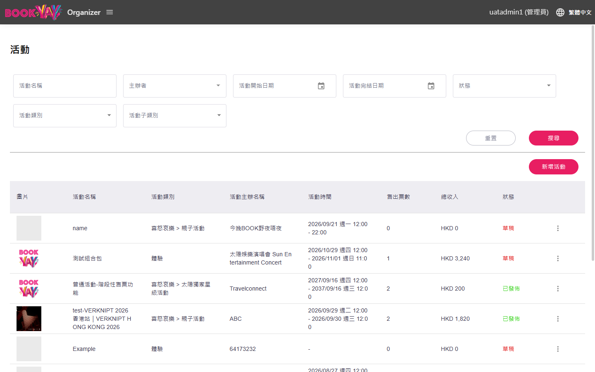
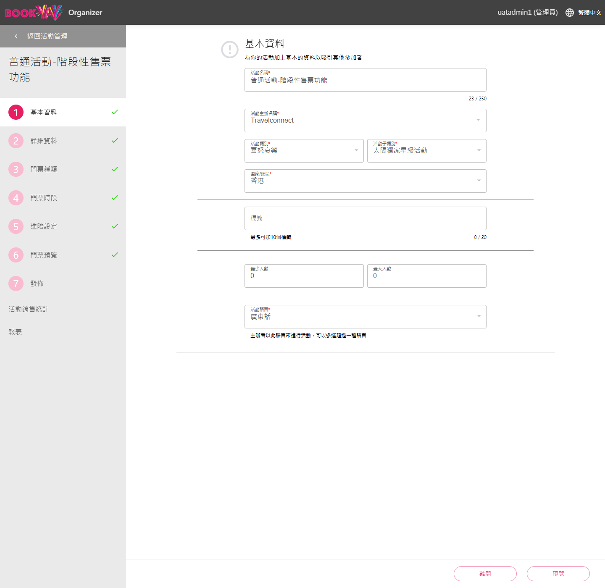
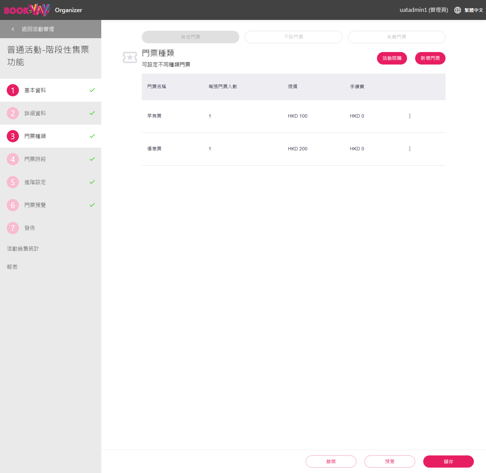
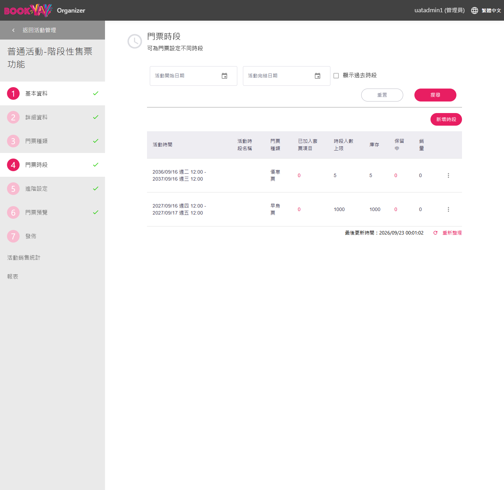
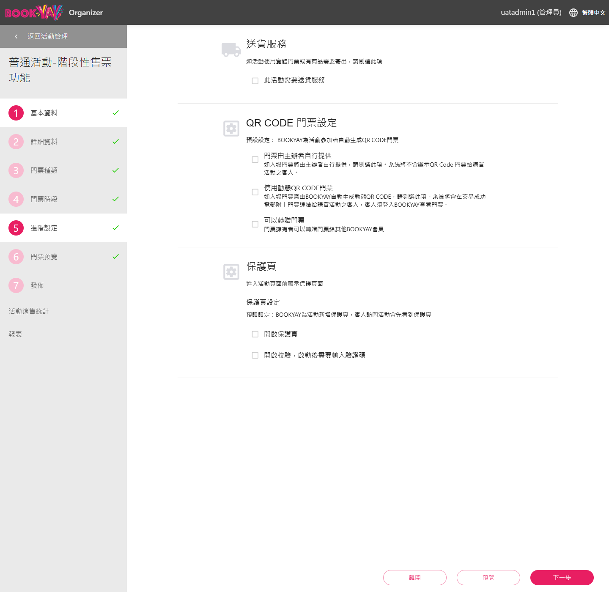
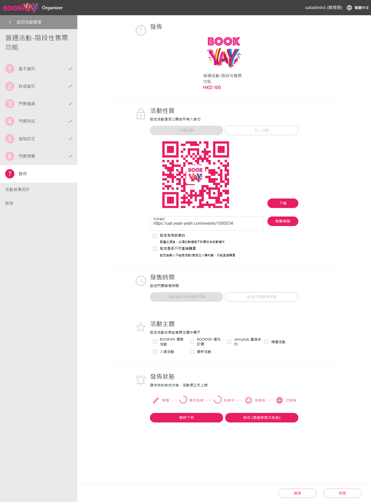
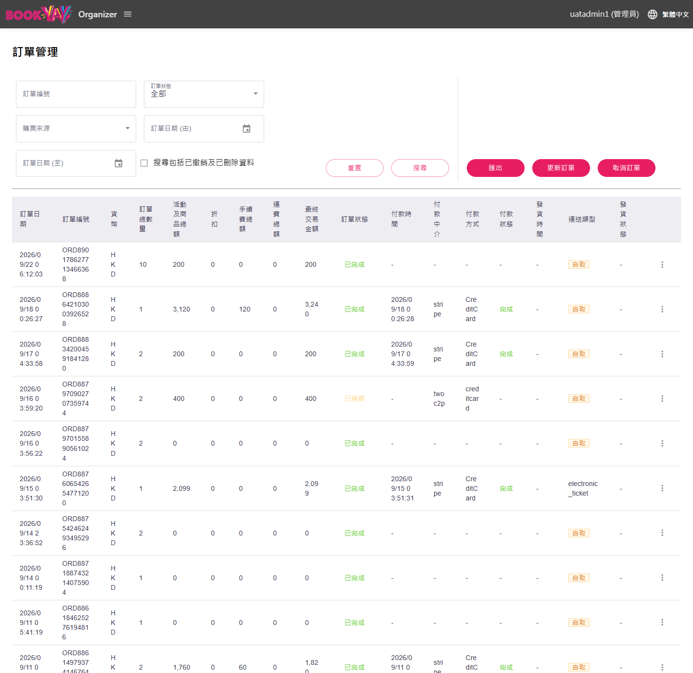
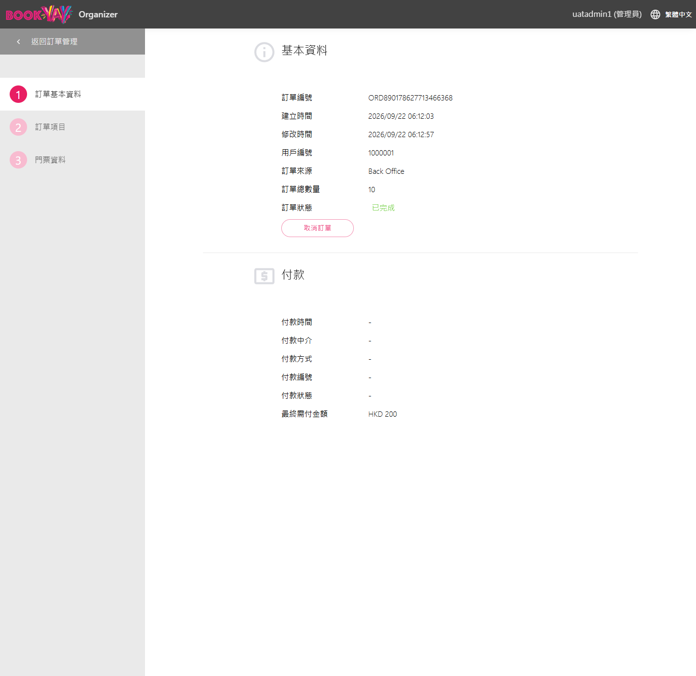
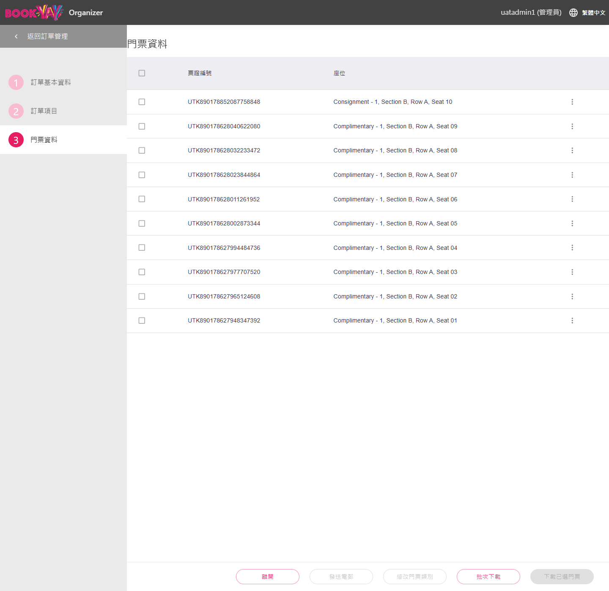
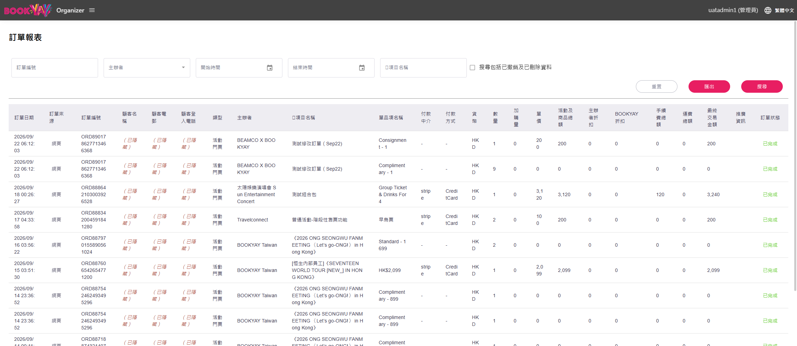

Ztor × Bookyay 寄售整合 · 直接標在現有 UAT 後台畫面上（2026-09-22 擷取，唯讀）· 框起來的就是對應位置 · 點編號看說明 · 契約：BRD v1.4 · 需求文件：bookyay-side-dev-spec-2026-09-22.md（BO-1…11）· 技術附錄：bookyay-api-contract-2026-09-22.md（API-0…7 · 欄位名）· Phase 1 活動型態＝一般活動（活動管理）
Ztor × Bookyay consignment integration · marked up directly on the existing UAT back office (captured 2026-09-22, read-only) · each box is the place the requirement lands · click a number for the note · contract: BRD v1.4 · requirements: bookyay-side-dev-spec-2026-09-22.md (BO-1…11) · technical annex: bookyay-api-contract-2026-09-22.md (API-0…7 · field names) · Phase 1 event type = 一般活動 (general event, 活動管理)
Bookyay's own screen labels are kept in Chinese throughout — they are what you actually see in the back office.
通路訂單／通路狀態／通路參考／通路夥伴 都是指 Ztor 這一側。對應 Bookyay 票務活動裡的英文字 Consignment（預留代碼 Cn）。通路訂單 / 通路狀態 / 通路參考 / 通路夥伴 all mean the Ztor side. Bookyay's own word for this, in its 票務活動 screens, is the English Consignment (reservation code Cn).| 精靈步驟 | 要注意的（其餘照送即可） |
|---|---|
| 1 基本資料 | 活動語言送全部選項，不只第一個 · 最少／最大人數是人數參考，不是票券庫存 |
| 2 詳細資料 | 集合地點與交通是獨立欄位，不要併進地址 · 活動圖片送原始 1:1 1200×1200 不裁切 · 活動詳情照原樣分段送，含該段圖片與影片 |
| 3 門票種類 | 每張門票人數是關鍵欄位，不可省略或預設為 1 · 免費門票＝現價 0，Ztor 自行判定 · 手續費照送但 Ztor 不使用（不向買家顯示或收取）· 折扣優惠／早鳥優惠照送但 Ztor 不套用 — Ztor 以現價開賣，促銷走自家優惠碼 |
| 4 門票時段 | 時段人數上限由該時段所有票種共用 · 該時段的每一個票種都要送，照後台排序 · 重覆活動把每一個日期展開成獨立時段 |
| 5 進階設定與發佈 | 售票時窗在「時段」上，票種本身沒有時窗 · 發佈狀態必須送（Ztor 的上下架靠它）· 測試資料的活動不進 feed |
BO-6 · API-5bookyay-side-dev-spec §4 · §8 · §10；Bookyay 原欄位名 → bookyay-api-contract §0.2Q13
套票照原樣，一張票 n 人 §4b
n 人票一律開「按門票人數生成 QR」Q11
販售時窗在時段上 API-2
| Wizard step | What to watch (everything else simply travels) |
|---|---|
| 1 基本資料 | 活動語言: send every selected value, not just the first · 最少／最大人數 are guidance on group size, not ticket inventory |
| 2 詳細資料 | 集合地點 and 交通 are separate fields — do not fold them into the address · send 活動圖片 as the original uncropped 1:1 1200×1200 · send 活動詳情 exactly as stored, block by block, with that block's images and video |
| 3 門票種類 | 每張門票人數 is load-bearing — never omit it or default it to 1 · a free ticket is simply 現價 0, and Ztor works out "free" itself · 手續費 travels but Ztor does not use it (never shown to or charged to the fan) · 折扣優惠 and 早鳥優惠 travel but Ztor does not apply them — Ztor sells at the 現價 and runs promotions through its own promo codes |
| 4 門票時段 | 時段人數上限 is shared by every ticket type in that 時段 · send every ticket type of the 時段, in back-office order · a repeat event sends every date as its own 時段 |
| 5 進階設定與發佈 | The sale window lives on the 時段; a ticket type has none of its own · 發佈狀態 must travel — it is what drives publish and pause on Ztor · test-data events never enter the feed |
BO-6 · API-5bookyay-side-dev-spec §4 · §8 · §10; Bookyay's native field names → bookyay-api-contract §0.2Q13
套票 as-is: one ticket, n people §4b
An n-person ticket always has QR-per-head on Q11
The sale window lives on the 時段 API-2
以下都是現在 UAT 後台的真實畫面 — 綠框是新東西，藍虛線框是背景工作，灰框是沿用。

BO-2BO-2BO-4 · API-5
BO-2BR-10
BR-25BR-22API-2§1
BR-02BO-4 · API-5§0.6-C。階段性售票＝一個時段一階段：資料照送，但 Ztor 2.3 不支援 BO-11
isDynamicQR · isTicketCanTransfer · isInputPassword …，不另包成 flags）— 設定不符的活動 Ztor 會拒絕匯入並提示，避免票到現場掃不過 API-2BR-02/03
BO-2API-1BO-2event.published，活動就出現在 Ztor。沒有預開步驟，上架即可賣 API-6BO-2
Q6′ 已不適用 — 不再預開，票種在賣出當下就已知，不需要事後用 修改門票類別 改
Every screen below is the real UAT back office — a green box is new, a blue dashed box is background work with no screen, a grey box is unchanged.
BO-2BO-2BO-4 · API-5BO-2BR-10BR-25BR-22API-2§1BR-02BO-4 · API-5§0.6-C. A staged sale built as one 時段 per stage: the data travels, but Ztor 2.3 does not support it BO-11isDynamicQR · isTicketCanTransfer · isInputPassword …, not re-wrapped into a flags object) — Ztor refuses to import a mis-configured event and says why, rather than letting a ticket fail at the gate API-2BR-02/03BO-2API-1BO-2event.published is pushed and the event appears on Ztor. There is no pre-issue step — once listed, it can sell API-6BO-2
Q6′ no longer applies — with no pre-issue the ticket type is known at the moment of sale, so nothing needs re-pointing with 修改門票類別
BR-42 · BO-9event.paused → Ztor 前台把活動隱藏起來（10-16 改判，原本只是關購買鈕）：列表看不到、直接連結顯示已下架、購物車內顯示已失效；恢復則 event.resumed 重新上架開賣 BR-04event.cancelled：已售票全部作廢（沒有未售票要處理 — Ztor 沒拿過票），Ztor 前台把活動隱藏起來（10-16 改判）；營運手動 email 通知買家（不自動發信），退款由營運在金流後台執行。BR-43capacity.changed，Ztor 可售量即時增加。沒有東西要預先產生 BR-50capacity.changed，Ztor 可售量即時下降。沒有東西要收回 BR-51BO-8 已取消BR-51
審核中的修訂不影響 Ztor 販售 — 以已核准版本為準
BR-42 · BO-9event.paused → Ztor hides the event (reversed 10-16; it used to only disable the buy button): it leaves the listing, a direct link shows 已下架, and cart items go 已失效. Resuming sends event.resumed and it is listed and selling again BR-04event.cancelled: every sold ticket is voided (there are no unsold tickets to deal with — Ztor never held any), and Ztor hides the event (reversed 10-16). Ops e-mail the buyers by hand (nothing is sent automatically) and run the refunds in the payment gateway console.BR-43capacity.changed is pushed and what Ztor may sell goes up at once. Nothing has to be generated in advance BR-50capacity.changed and what Ztor may sell drops at once. Nothing has to be taken back BR-51BO-8 droppedBR-51
A revision in approval does not affect selling on Ztor — the approved version stands
ztor_tag 分通路）；買家要退款時，作廢在 Bookyay BO 執行並即時通知 Ztor 更新錢包與發信。系統不碰錢 — 退款由營運在金流後台執行。（BR-40 · BR-41 · BR-60 · BR-61）
ztor_tag，財務用它分通路 BO-5BO-5BR-40BO-5
BO、詳情顯示 Back Office、報表顯示 網頁 BO-5ticket.voided 給 Ztor → 買家錢包變「已取消」；營運手動 email 買家（不自動發信）BR-40BO-7
BR-03/30BO-4BO-4API-5
建單時帶買家編號＋email 或電話，供客服查單 BO-5
通路訂單的認列、記日、退款都沿用 Bookyay 既有做法
ztor_tag). When a buyer wants a refund, the void is executed in Bookyay BO and Ztor is told at once so it can update the wallet and notify the fan. The system never moves money — ops run the refund in the payment gateway console. (BR-40 · BR-41 · BR-60 · BR-61)ztor_tag finance uses to split the channels BO-5BO-5BR-40BO-5BO in the list, Back Office in the detail and 網頁 in the report BO-5ticket.voided is pushed to Ztor → the buyer's wallet shows 已取消. Ops e-mail the buyer by hand; nothing is sent automatically BR-40BO-7BR-03/30BO-4BO-4API-5
The confirm carries the buyer's id plus e-mail or phone, so support can find the order BO-5
Recognition, dating and refunds for a channel order all follow Bookyay's existing practice

BO-10BR-62BO-10BO-5BO-6bundle — 門票＋商品3u_9f8e7d · 同一帳號回購用這個認| 項目 | HKD | 來源與說明 |
|---|---|---|
| 門票 二人套票（2 × 200） | 400 | 計入 Bookyay 票務收入 Bookyay price（現價） |
Ztor 優惠碼 SUMMER50 | −50 | Ztor 自家促銷，Ztor 吸收 — 不影響上面的認列金額6 |
| 商品 巡演 T-shirt × 2 | 160 | 不計入票務收入 Ztor eShop5 |
| 手續費 | — | Ztor 不向買家收，通路訂單不產生手續費行 |
| 合計（HKD） | 510 | 400 − 50 ＋ 160 |
| 買家實付 | TWD 2,050 · HKD 510 依 Ztor 匯率表換算並微調。幣別只有這一行會出現，其餘全部 HKD2 | |
| # | 類型 | 品項 | 數量 | 票券編號 | HKD | Ztor 狀態 | Bookyay 訂單 |
|---|---|---|---|---|---|---|---|
| 1 | 門票 | 二人套票 · 11/08 19:30 | 1 | UTK…58848 | 200 | sold | ORD…66368 |
| 2 | 門票 | 二人套票 · 11/08 19:30 | 1 | UTK…58849 | 200 | sold | ORD…66369 |
| 3 | 商品 | 巡演 T-shirt（黑 / L） | 2 | — | 160 | — | — 不建訂單 |
ztorUserRef 一併保留，它是認得出「同一個帳號回購」用的headCnt≥2，票種層級）；Ztor 的組合訂單是門票＋商品一起買（訂單層級）。同一筆可以兩者都有，不要混用同一個詞BO-10BR-62BO-10BO-5BO-6bundle — tickets + merchandise3u_9f8e7d · how a repeat purchase from the same account is recognised| Line | HKD | Source and note |
|---|---|---|
| Ticket · two-person 套票 (2 × 200) | 400 | counts as Bookyay ticket revenue Bookyay price (現價) |
Ztor promo code SUMMER50 | −50 | Ztor's own promotion, absorbed by Ztor — it does not change the recognised amount above6 |
| Merchandise · tour T-shirt × 2 | 160 | not ticket revenue Ztor eShop5 |
| 手續費 (service fee) | — | Ztor does not charge it, so a channel order produces no fee line |
| Total (HKD) | 510 | 400 − 50 + 160 |
| Buyer actually paid | TWD 2,050 · HKD 510 converted on Ztor's FX table and fine-tuned. This is the only line where another currency appears; everything else is HKD2 | |
| # | Type | Item | Qty | Ticket no. | HKD | Ztor state | Bookyay order |
|---|---|---|---|---|---|---|---|
| 1 | Ticket | Two-person 套票 · 11/08 19:30 | 1 | UTK…58848 | 200 | sold | ORD…66368 |
| 2 | Ticket | Two-person 套票 · 11/08 19:30 | 1 | UTK…58849 | 200 | sold | ORD…66369 |
| 3 | Merch | Tour T-shirt (black / L) | 2 | — | 160 | — | — no order created |
ztorUserRef is kept alongside; it is how a repeat purchase from the same account is recognisedheadCnt ≥ 2, at ticket-type level); Ztor's 組合訂單 is tickets and merchandise bought together (at order level). One transaction can contain both, so do not use the words interchangeably| # | 介面 | 給 Ztor 什麼 | BRD |
|---|---|---|---|
| API-0 | 金鑰認證 Bearer | 去識別（無買家欄位）· 分頁 · 金額以「分」為單位 · updatedSince 增量 | §8 |
| API-1 | GET /events | 只回「Ztor 活動＝ON」的一般活動 · 三語標題／內文 · 私人旗標 · 購買上限 · 時區 · 上下架狀態 | BR-04/10/20/22 |
| API-2 | GET /events/{id} | ＋ sessions[]（limitHeadCnt ＝分配量；售票時窗在時段上：openSellTime / closeSellTime / preSellTime）· sessions[].tickets[]（price HKD · headCnt · 限購；票種本身沒有時窗）· tncs · 進階設定以 Bookyay 原欄位名 | BR-12/14/25 |
| API-3 | GET /events/{id}/tickets | 只回入場狀態：是否已入場／入場時間。不再整批回 QR — QR 在賣出當下由 API-5 回傳 | BR-64 |
| API-4 | GET …/availability | 列表／售罄顯示用：remaining · saleOpen（逐時段）· 上下架狀態。不鎖任何東西 — 真正鎖位是 API-5a。remaining 要扣掉生效中的鎖位 | BR-21 |
| API-5a ⭐ | POST /holds | 鎖位。粉絲一進結帳就呼叫，Bookyay 從庫存裡扣住這個位子，回 holdId ＋ 到期時間。鎖到了 Ztor 才收款。可售量＝上限 − 已售 − 生效中的鎖位；兩個人搶最後一位，只有一個鎖得到。時限要比 Ztor 的 15 分鐘再長一點，到期自動釋放，放棄結帳也可以提早釋放。 快到期而粉絲要求延長時，Ztor 呼叫 POST /holds/{id}/extend 延長原本那個鎖位，不是放掉再重新鎖（Jeff 10-12 定案）— 放掉再鎖會在空檔被別人搶走。新到期時間由 Bookyay 給，而且要有次數上限（建議最多 2 次）：可以無限延長的鎖位等於庫存被默默吃掉 | BR-21 |
| API-5b ⭐ | POST /orders | 確認成單。收完款呼叫，把那個鎖位轉成訂單、開 UTK、回傳 QR。不是重新搶庫存。 同步、要快（p95 < 2 秒）、以 Ztor 訂單號冪等。鎖位已過期 → 回 410 直接拒絕，不要默默重搶 — 粉絲已經付錢了，要讓營運知道 | BR-02/60/63 |
API-7| 事件 | 何時推 | Ztor 收到後 |
|---|---|---|
event.published | 發佈核准 | 活動上架可售 |
event.paused / resumed | 暫停發售 · 暫時下架 · 改回草稿 | 自動下架 / 重新上架 |
event.updated | 修訂核准生效時（非送審時） | 更新鎖定欄位；營運人工 email 買家 |
event.cancelled | 整場取消 | 下架 · 全部票已取消 · 營運退款 |
ticket.voided | 取消訂單（已售的通路訂單） | 錢包「已取消」；營運手動 email（不自動發信） |
capacity.changed | 上限調高／調低核准 | 可售量增減；歸零＝完售，不下架 BR-51 |
event.unlisted | 其他改動核准（非庫存） | Ztor 自動暫時下架，等營運複核再上架 |
ticket.redeemed 選配 | Organizer App 掃描 | 錢包「已使用」（否則每小時拉一次） |
BO-9ztor · API 金鑰 · webhook 網址與密鑰 · 佔位顧客 · 狀態| # | Endpoint | What Ztor gets | BRD |
|---|---|---|---|
| API-0 | Key auth, Bearer | De-identified (no buyer fields) · pagination · amounts in cents · updatedSince for increments | §8 |
| API-1 | GET /events | Returns only general events with Ztor 活動 = ON · titles and body in three languages · the private flag · purchase caps · time zone · listing state | BR-04/10/20/22 |
| API-2 | GET /events/{id} | Plus sessions[] (limitHeadCnt is the capacity; the sale window lives on the session: openSellTime / closeSellTime / preSellTime) · sessions[].tickets[] (price in HKD · headCnt · caps; a ticket type has no window of its own) · tncs · the advanced settings under Bookyay's own field names | BR-12/14/25 |
| API-3 | GET /events/{id}/tickets | Scan status only: whether a ticket has been used, and when. No bulk QR feed any more — the QR comes back from API-5 at the moment of sale | BR-64 |
| API-4 | GET …/availability | For listing and sold-out display: remaining · saleOpen (per session) · listing state. It reserves nothing — the binding reservation is API-5a, and remaining must be net of active holds | BR-21 |
| API-5a ⭐ | POST /holds | Hold the seat. Called the moment a fan enters checkout: Bookyay reserves the seat against capacity and returns a holdId and an expiry. Ztor charges only once the seat is held.Remaining = capacity − sold − active holds; when two fans go for the last seat, only one gets the hold. The TTL must be a little longer than Ztor's 15 minutes, it releases automatically on expiry, and an abandoned checkout can release it early. When the timer runs low and the fan asks for more time, Ztor calls POST /holds/{id}/extend to extend the hold it already has rather than releasing and re-taking it (Jeff's call, 10-12) — re-taking would expose the seat in the gap. The new expiry is set by Bookyay, and there must be a cap on the number of renewals (two is the suggestion): a hold that can be extended forever eats inventory just as silently as one that never expires | BR-21 |
| API-5b ⭐ | POST /orders | Confirm the order. Called once payment is taken: converts that hold into an order, issues the UTK and returns the QR. It does not take fresh capacity. Synchronous and fast (p95 < 2 s), and idempotent on the Ztor order number. If the hold has lapsed, return 410 and refuse outright — do not quietly re-reserve: the fan has already paid, so ops need to know | BR-02/60/63 |
API-7| Event | Pushed when | What Ztor does |
|---|---|---|
event.published | Publish approved | The event lists and can sell |
event.paused / resumed | 暫停發售 · 暫時下架 · back to draft | Disables the buy button / resumes selling |
event.updated | When a revision takes effect on approval (not when submitted) | Updates the locked fields; ops e-mail the buyers by hand |
event.cancelled | The event is cancelled | Buy button off · every ticket voided · ops refund |
ticket.voided | 取消訂單 on a sold channel order | Wallet shows 已取消; ops e-mail by hand, nothing automatic |
capacity.changed | A capacity increase or decrease is approved | What Ztor may sell moves; zero means sold out, not unlisted BR-51 |
event.unlisted | Any other approved change (not inventory) | Ztor unlists itself and waits for ops to review and re-publish |
ticket.redeemed 選配 | Scanned in the Organizer App | Wallet shows 已使用 (otherwise Ztor polls hourly) |
BO-9ztor · API key · webhook address and secret · placeholder customer · state| 步驟 | 設定 | 為什麼 |
|---|---|---|
| 1 基本資料 | 一般活動（非票務活動、非優先訂票）· Ztor 活動 = ON | Phase 1 只支援一般活動；開關＝進 feed（BR-01/02） |
| 2 詳細資料 | 條款及細則 填該場條款並開啟顯示 | Ztor 沿用 Bookyay 條款，不另建（BR-14） |
| 2 詳細資料 | 活動包括 · 需要攜帶的物品 · 活動須知 — 照常填 | 10-09 改判：biz 09-23 曾標「不搬」，現在照送（includes[] · carries[] · notices[]），顯不顯示由 Ztor FE 決定（§0.5 總原則） |
| 3 門票種類 | 自定門票 · 名稱 · 現價 HKD · 每張門票人數 | HKD 為基準價，Ztor 依匯率表換算、逐幣微調（BR-25） |
| 3 門票種類 | 活動限購：每人總限購 · 每次交易限購 · 限購次數 | 購買上限在 Bookyay 設定，Ztor 拉取後於結帳執行（BR-22） |
| 3 門票種類 | 套票 照 Bookyay 既有方式設定 | 原樣帶過去：套票就是一個票種（人數 > 1），不拆成隱藏單人票＋自動組合（§0.5b） |
| 4 門票時段 | 單一時段（MVP）· 時段人數上限 = 給 Ztor 的整場數量 · 售票時窗 | 上限＝Ztor 可賣張數（不預開）；售票時窗設在時段上。階段性售票（逐時段一階段）資料照送，Ztor 2.3 不支援 |
| 7 發佈 | 私人活動（只在 Ztor 賣時）· 不勾「設定為測試資料」 | 隱藏上架＋私人連結（BR-20）· 測試資料不進 feed |
BO-4 · API-5BR-25/22/14/20
Ztor adds only a display layer: images · supplementary text · translations BR-10
Q8 — IsTest 活動一律排除，確認？
| Step | Setting | Why |
|---|---|---|
| 1 基本資料 | 一般活動 (general event — not 票務活動, not 優先訂票) · Ztor 活動 = ON | Phase 1 supports general events only; the switch is what puts it in the feed (BR-01/02) |
| 2 詳細資料 | 條款及細則 — enter this event's terms and turn display on | Ztor reuses Bookyay's terms and builds none of its own (BR-14) |
| 2 詳細資料 | 活動包括 · 需要攜帶的物品 · 活動須知 — fill in as usual | Reversed 10-09: biz 09-23 had marked these "do not carry over"; they now travel (includes[] · carries[] · notices[]) and whether to display them is a Ztor FE decision (§0.5) |
| 3 門票種類 | 自定門票 · name · 現價 in HKD · 每張門票人數 | HKD is the base price; Ztor converts on its FX table and fine-tunes per currency (BR-25) |
| 3 門票種類 | 活動限購: total per person · per transaction · number of purchases | The caps are set in Bookyay; Ztor pulls them and enforces them at checkout (BR-22) |
| 3 門票種類 | 套票 — set it up the existing Bookyay way | It travels as-is: a 套票 is one ticket type with 人數 > 1, never split into a hidden one-person ticket plus an auto-built bundle (§0.5b) |
| 4 門票時段 | One session (MVP) · 時段人數上限 = the whole quantity Ztor may sell · the sale window | The capacity is what Ztor can sell, with nothing issued in advance; the sale window is set on the 時段. A staged sale (one 時段 per stage) travels as data but Ztor 2.3 does not support it |
| 7 發佈 | 私人活動 (whenever it sells on Ztor only) · leave 設定為測試資料 unticked | Hidden listing plus the private link (BR-20); test data never enters the feed |
BO-4 · API-5BR-25/22/14/20
Ztor adds only a display layer: images · supplementary text · translations BR-10
Q8 — IsTest events are always excluded; confirm?
BR-03 A4
One organizer account per artist — ops task, no build BR-31
Q1 — QR payload 格式
BR-03 A4
One organizer account per artist — ops task, no build BR-31
Q1 — the QR payload format
| # | 問題 | 擋住什麼 | 誰 |
|---|---|---|---|
| 最優先 | 鎖位 ＋ 成單這兩支 API 做得到嗎？ ① POST /holds：粉絲進結帳就從庫存鎖住座位，回 holdId ＋到期時間，時限由 Bookyay 自己強制，到期自動釋放。② POST /orders：收款後把那個鎖位轉成訂單、開票、回傳 QR，以 Ztor 訂單號冪等，p95 < 2 秒。這是 10-12 定案、取代預開的新作法。請確認「做不做得到」與大概工期 — 最該先回的一題，沒有備案。 ③ POST /holds/{id}/extend：粉絲要求延長結帳時間時延長原鎖位（Jeff 10-12 定案：延長，不重搶），不佔新庫存、不會回售罄、延長次數有上限 — 請一起評估。 | 整個整合（這兩支不行就要重新設計） | Eric / Jesse |
| Q1 | Organizer App 驗的 QR 是什麼字串？格式、是否整張票生命週期不變 | API-5 建單回傳的 QR | Jesse / Eric |
| Q2 | 活動 stage 代碼表（500 = 已發佈？）與 valid 意義 | webhook 狀態對應 | Jesse |
| # | Question | What it blocks | Who |
|---|---|---|---|
| Top priority | Can you build the hold + confirm pair? ① POST /holds — reserve the seat against capacity the moment a fan enters checkout, returning a holdId and an expiry, with the TTL enforced by Bookyay and automatic release on expiry.② POST /orders — after payment, convert that hold into an order, issue the ticket and return the QR, idempotent on the Ztor order number, p95 < 2 s.This was decided on 10-12 and replaces pre-issue. We need to know whether it can be built and roughly how long — the first question to answer, and there is no fallback. ③ POST /holds/{id}/extend — when a fan asks for more time, extend the existing hold (Jeff's call, 10-12: extend, never re-take). It takes no new capacity, can never answer sold out, and the number of renewals is capped. Please estimate this one too. | The whole integration — if the pair cannot be built, the design goes back to the drawing board | Eric / Jesse |
| Q1 | What exact QR string does the Organizer App validate? The format, and whether it stays fixed for the ticket's life | The QR returned by the API-5 confirm | Jesse / Eric |
| Q2 | The event stage code table (500 = 已發佈?) and what valid means | Webhook state mapping | Jesse |